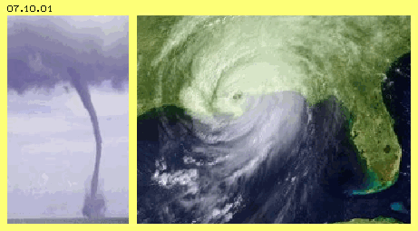
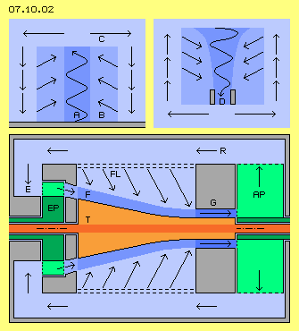
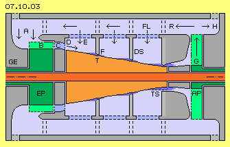
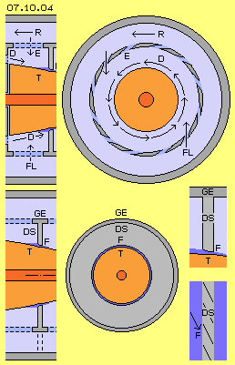
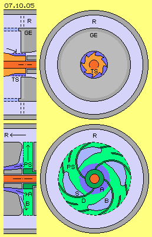
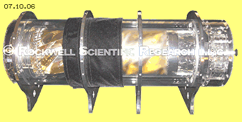

| Alfred Evert | 25.09.2008 |
07.10. Taifun - Turbine
Wirbelsturm, Hurrikan, Tornado, Zyklon, Taifun
Wirbelsysteme in der Atmosphäre sind höchst eindrucksvolle fluid-mechanische Erscheinungen, wobei Wirbelstürme riesigen Umfang annehmen können, aber auch in lokalen Windhosen enorme Kräfte auftreten. Wenn ein geeigneter Auslöser gegeben ist, wachsen diese System durch ´Selbst-Organisation´ und produzieren eigenständig beschleunigte Strömungen. Dieser ´natürliche Maschinen´ müssen auch in einem künstlichen Apparat nachzubilden und damit eine autonom arbeitende Kraft-Maschine baubar sein. Nachfolgend sind die entscheidenden Effekte beschrieben und daraus abgeleitet wird eine zweckdienliche Konstruktion. Zur Unterscheidung von anderen Maschinen und Konzeptionen wird diese neue Entwicklung als ´Taifun-Turbine´ bezeichnet.

In tropischen Gewässern wird Wasser aufgeheizt und es kommt zu starker Verdunstung. Der Wasserdampf steigt auf und kühlt oben ab. Es kommt zu Turbulenzen und Gewittern, wobei der Dampf kondensiert und starker Regen nieder fällt. Dieser thermodynamische Prozess wird generell als ursächlich für Wirbelstürme angesehen. Dieses Bewegungsmuster findet aber auch in lokalem Bereich z.B. hoher Kumuluswolken statt, die durch einen ´Platzregen´ wieder in sich zusammen fallen - ohne weiträumige Luftbewegung. Die Verdunstung von Wasser ist also nur Auslöser, während die wirkliche Ursache für die Beschleunigung von Luftmassen in weitem Umfeld auf rein fluid-mechanischem Effekt beruht.Wenn voriger Wasserdampf aufsteigt, zieht er Luft aus der Umgebung mit nach oben. Luft strömt niemals radial zu einem Zentrum, vielmehr bildet sich ein eindrehender Wirbel, bei diesen großen Wirbelsystemen z.B. bedingt durch die Erd-Rotation. Als Auslöser kann aber auch eine geringe Asymmetrie ausreichend sein, z.B. relativ schwache, aber gegenläufige Windbewegungen. Auch solche ´trockene´ Windhosen können sich zu mächtigen Wirbelsystemen entwickeln mit den typischen, spiralig eindrehenden Luftbewegungen.
Diese ´Potential-Wirbel´ sind gekennzeichnet durch relativ schnelle Bewegung im Zentrum, d.h. dort hohem dynamischem (Strömungs-) Druck und entsprechend reduziertem statischem Druck (weil die Summe der statischen und dynamischen Druckanteile konstant ist). Die Luft im weiten Umfeld dagegen weist relativ langsame Bewegung auf und somit ist außen herum der statische Druck höher. Dieser Druckgradient besteht von ganz außen bis zum Wirbelkern, also im gesamten Volumen des Wirbelsystems. Zwischen allen ´Strömungsschichten´ existiert dieses zentripetale Druck-Gefälle, welches den Wirbel zusammen drückt. Die Luft wird dabei von außen nach innen auf spiraliger Bahn beschleunigt, d.h. immer größere Anteile statischen Drucks werden überführt in dynamischen Strömungsdruck.
Nur darum sind Potentialwirbel selbst-beschleunigend mit Luft-Bewegungen bis zur Schallgeschwindigkeit, egal durch welchen Auslöser das Wirbelsystem gestartet wurde. Dieser Prozess läuft ab, wann immer benachbarte Strömungen unterschiedliche Geschwindigkeit (und damit statische Druckdifferenz besteht) aufweisen, egal ob das Wirbelsystem einen Durchmesser von hundert Kilometer hat oder nur ein paar Meter - oder nur ein paar Zentimeter.
Wesentliche Merkmale
Zunächst setzen diese Wirbelsysteme also eine auslösende Strömung voraus, eine ´Hauptströmung´, welche sich in Richtung der Wirbel-Längsachse bewegt und drehend ist. Bei tropischen Wirbelstürmen erfolgt diese Auslösung durch aufsteigenden Wasserdampf. Bei kleinen Windhosen ergibt er sich rein zufällig aus gegenläufigen Luftbewegungen, welche sich aufwärts-drehend ausweichen. Bei maschineller ´Nachahmung´ muss entsprechend eine originäre Drall-Strömung gegeben sein.
Zum zweiten resultiert die Beschleunigung der Strömungen aus dem Gefälle statischen Drucks vom Umfeldes in Richtung Wirbelkern. Von außen nach innen wird statischer Druck zunehmend in dynamischen Druck überführt. Der augenscheinliche Effekt der Selbst-Beschleunigung basiert auf seitlich-diagonalem bzw. spiralig-eindrehendem Zufluss von ´Falschluft´ aus einem möglichst weiten Umfeld. Bei natürlichen Wirbeln ist dieser Zufluss unten durch den Boden begrenzt, so dass dort die stärksten Winde toben. Bei maschineller Nachbildung ist also ausreichend Zufluss von Falschluft zu organisieren, so dass in Längsrichtung der Wirbel zunehmende Winkelgeschwindigkeit erreichen kann.
Zuletzt muss die Luft am Wirbel-Ende abfließen können, sonst bricht das System zusammen. Bei großen Wirbelstürmen häuft sich Luft viele Kilometer hoch auf und das System erlahmt, wenn diese nicht mehr ausreichend schnell zur Seite abfließen kann. Bei technischer Nachbildung muss also hinter dem zunehmend schneller eindrehenden Wirbel ein ausdrehender Wirbel organisiert werden, in welchem die Luft ausreichend schnell abgeführt wird, am besten wieder zurück zum Einlass.
Nicht drücken sondern saugen
In diesen Maschinen muss also eine Überführung statischen Drucks in dynamischen Druck statt finden und ein ständiges Zusammenwirken von Sog und Druck.
Viktor Schauberger betonte immer wieder, dass vorrangig Sog zu nutzen wäre. Der enorme Unterschied zwischen Drücken und Saugen wird sehr deutlich z.B. bei Strömung von Luft durch ein einfaches Rohr.
Nach den gängigen Formeln ist der Widerstand abhängig von Durchmesser und Länge, je enger und je länger desto schwieriger wird der Durchsatz. Es ist z.B. nur eine Frage der Länge, bis jedes Rohr zum selbst-sperrenden System wird: egal mit welchem Druck am Einlass die Luft hinein gedrückt wird, am Auslass ist die Strömung praktisch null. Vollkommen anders verhält es sich, wenn die Luft am Rohr-Ende heraus gesaugt wird: nahezu widerstandslos fliegt die Luft durch das Rohr, durch Engpässen bis zur Schallgeschwindigkeit.
Die Anwendung von Druck erzeugt Gegendruck, Reibungs- und Wärme-Verluste. Bei Anwendung von Sog dagegen fallen die Partikel ´von sich aus´ in die relative Leere. Es wird schnelle Strömung generiert, allein indem der normalen Molekularbewegung die Gelegenheit gegeben wird, sich in eine bevorzugte Richtung zu bewegen. Ohne zusätzlichen Energie-Einsatz fallen die Partikel vorwärts, wobei diese Strömungen maximal Schall-Geschwindigkeit erreichen. Es ist also durchaus vorteilhaft, den Durchsatz durch eine Maschine bevorzugt per Sog zu organisieren, weil dabei der ohnehin gegebene atmosphärische Druck der Umgebung ´mobilisiert´ wird.
In Bild 07.10.02 sind oben links vorige drei Merkmale eines Wirbelsturms rein schematisch skizziert: es muss eine auslösende Strömung A existieren, welche durch Zufluss von Falschluft B zunehmend im Drehsinn beschleunigt wird. Die Luft dieses eindrehenden Wirbels muss in einem ausdrehenden Wirbel C abfließen können.
Im vorigen Kapitel ´07.09. Schauberger-Repuline´ wurden die Bewegungsprozesse dieser ´legendären´ Maschine analysiert. Zwischen den Rotor-Scheiben findet ein ausdrehender Wirbel statt, die Luft wird praktisch nach außen ´abgesaugt´, weil an größerem Radius immer mehr Raum zur Verfügung steht. Sog allein bewirkt allerdings überhaupt nichts, Bewegung in den Sog-Bereich hinein kommt nur zustande aus dem Vorhandensein von Druck bzw. höherer Dichte. In der Repulsine werden Hauptströmung, Druck und Dichte am zentralen Einlass mittels Pumpe produziert bzw. steht Druck auch in den Öffnungen für Falschluft an.
Nach obigen Überlegungen wäre vorteilhaft, zunächst einen eindrehenden Wirbel zu schaffen, welcher durch den Umgebungs-Druck eines weiten Bereiches angetrieben wird. Diese Bewegungsform ist z.B. bekannt als ´Bade-Wannen-Abfluss-Wirbel´, siehe Bild 07.10.02 oben rechts. Dort wird die auslösende Bewegung durch Gravitation bewirkt. Analog dazu könnte in einer Maschine auch durch ´Absaugen´ am Auslass des Wirbels ein geschlossener Kreislauf organisiert werden, wie in diesem Bild bei D markiert ist.
Anstelle des scheiben-förmigen Rotors der Repulsine könnte vorteilhaft sein, einen länger gestreckten Rotor zu verwenden. Um dessen Längsachse drehend sollte der Hauptstrom sein, so dass Falschluft an einer großen zylinderförmigen Oberfläche zufließen und den Wirbel beschleunigen kann. Erst am Auslass dieses Rotors sollte ein ausdrehender Wirbel den zügigen Abfluss bewirken, indem eine Pumpe am Auslass fortgesetzt ein ´Vakuum´ produziert.

Wärme plus VakuumEnergie-Einsatz erfordert nur dieser Hieb, mit welchem die Partikel fort geschlagen werden. Die Partikel werden beschleunigt, d.h. die Abluft wird erwärmt - und dieser Zuwachs an Wärme-Energie ist ziemlich genau entsprechend zur erforderlichen Antriebs-Energie (nachzulesen in Datenblättern gängiger Vakuum-Pumpen, ein klarer Fall von Perpetuum Mobile, weil das ´Potential Vakuum´ ohne Aufwand generiert wird). Solche Pumpen transformieren Antriebs-Energie in Wärme-Energie und nebenbei als zusätzliches Ergebnis produzieren sie relative Leere.
Wenn die erwärmte Abluft weitgehend in das System zurück geführt wird, bleibt diese Wärme-Energie im System. Wärme ist gleichbedeutend mit erhöhter Geschwindigkeit der Partikel, d.h. erhöhter kinetischen Energie. Solche Wärme wird natürlich auch von Druck-Pumpen produziert. Dort aber ist höherer Energie-Einsatz erforderlich, weil bzw. wenn die Pumpe gegen den Widerstand nachfolgender Bereiche erhöhten Drucks arbeiten muss. Umgekehrt muss natürlich auch eine Sog-Pumpe gegen Widerstand am Auslass arbeiten, wenn die Luft letztlich aus dem System abfließt, dort allerdings nur gegen normalen atmosphärischen Druck. Und noch einmal weniger Widerstand ist gegeben, wenn die Luft weitgehend im System verbleibt über eine Rückführung (und zugleich noch immer drehend ist im generellen Drehsinn des Systems).
Grund-Konzeption
In Bild 07.10.02 unten sind schematisch die generellen Bauelemente einer solchen Maschine dargestellt, nun mit waagerechter Achse gezeichnet. Der Wirbelkern wird durch eine kegelförmige Turbine T (rot) gebildet. Eine Einlass-Pumpe EP (grün) übt keinen wesentlichen Druck aus, sondern führt lediglich die Hauptströmung F (mittel-blau) diagonal vorwärts drehend an die Oberfläche der Turbine heran. Diese Drall-Strömung wird entscheidend beschleunigt durch den Zufluss von Falschluft FL aus dem weiten Umfeld.
Bei G ist eine äußerst dichte Strömung (dunkel-blau) gegeben, welche an kurzem Radius hohe Winkelgeschwindigkeit aufweist. Allein durch Haftreibung der Strömungen um die Turbinen-Oberfläche ergibt sich ein nutzbares Drehmoment. Der wesentliche Antrieb dieser Maschine erfolgt durch die Auslass-Pumpe AP (grün), welche den Massedurchsatz auf sehr ökonomische Weise gewährleistet. Nach diesem ausdrehenden Wirbel fließt die Luft über einen Rücklauf-Bereich R zurück zum Einlass E. Ein großer Anteil davon wird jedoch schon zuvor als Falschluft in den eindrehenden Wirbel um die Turbine hinein drücken und fließen.
Taifun-Motor
In Bild 07.10.03 ist obiges prinzipielle Schema detailliert und um einige Bauelemente ergänzt. Der entscheidende Antrieb ergibt sich aus dem atmosphärischen Druck der Umgebung. Das Gehäuse GE (grau) darf darum nicht hermetisch geschlossen sein. Die Luft aus der Umgebung und aus dem Rücklauf R fließt durch den Einlass A zur Einlass-Pumpe EP (dunkelgrün). Deren Schaufeln B (hellgrün) fördern Luft nach rechts und beschleunigt sie im Drehsinn des Systems. Diese Strömung wird durch Stator-Leitschaufeln C (blau) diagonal und etwas einwärts gerichtet an die Oberfläche der Turbine geleitet.

Die Turbine T (rot) wird durch einen Zylinder in Form eines runden Kegelstumpfes gebildet. Vorige Hauptströmung D rotiert um diesen Zylinder und wandert auf spiraliger Bahn mit enger werdendem Radius nach rechts zum Turbinen-Auslass. Danach wird die Luft ´abgesaugt´ durch die Auslass-Pumpe AP (grün). Die Schaufeln G (hellgrün) erfassen die Luft und führen sie auswärts. Teilweise fließt die Luft nach außen in die Umgebung ab (siehe Pfeil H), z.B. um überschüssige Wärme abzuführen. Der wesentliche Anteil der Luft verbleibt jedoch im System und fließt, noch immer drehend, durch den Rücklauf-Bereich R zurück nach links.Dieser Rücklauf-Bereich wird gebildet zwischen zwei ´Rohren´ (grau), welche ortsfeste Bestandteile des Gehäuses sind. Das innere Rohr weist Öffnungen E (dunkelblau) auf, durch welche Falschluft FL diagonal einwärts strömt. Die langsamere Strömung im Rücklauf-Bereich weist höheren statischen Druck auf als die zum Zentrum hin immer schneller drehende Strömungen. Dies entspricht also dem hohen statischen Druck eines weiten Umfeldes. Analog zu den Bewegungsprozessen eines Wirbelsturms wird hier dieser ´Taifun´ rund um den Turbinen-Kegel beschleunigt.
Die Luftpartikel fliegen nicht aufgrund Fliehkraft nach außen, vielmehr werden bei diesem Potential-Wirbel die Partikel aufgrund des zentrifugalen Gradienten statischen Drucks nach innen gedrückt und schon aufgrund engerer Radien wird die Drehung beschleunigt. Weil sich alle Partikel in ähnliche Richtung, d.h. relativ parallel zueinander bewegen, weisen diese schnelle Strömungen hohe ´Dichte´ auf. Die Luft durch die Einlass-Pumpe liefert also nur eine auslösende Hauptströmung D, wobei die Beschleunigung der Strömung wie auch der Massedurchsatz im wesentlichen aus dem Umgebungsdruck und dem Zufluss von Falschluft resultiert.
Es könnte zusätzliche Beschleunigung durch den Düsen-Effekt erreicht werden. Hierzu ist der Raum um die Turbine durch ortsfeste ´Düsen-Scheiben´ DS (hellgrau) unterteilt. Zwischen diesen Scheiben und der Turbinen-Oberfläche wird ein Engpass F gebildet, in welchem die bekannte Beschleunigung auftritt (siehe dunkelblau markierte Bereiche).
Ein Drehmoment ergibt sich aufgrund Haftreibung an der glatten Oberfläche der Turbinen, z.B. besonders in vorigen Engpässen. Nur direkt am Turbinen-Auslass könnten auch Turbinen-Schaufeln TS eingesetzt werden (wie in diesem Längsschnitt unten als Alternative skizziert ist). Anders als bei gängigen Strömungsmaschine darf hier aber nicht die gesamte kinetische Energie aus dem System abgeführt werden, sondern nur anteilig aus dem Selbst-Beschleunigungs-Effekt dieses Wirbelsturms. Nachfolgend sind einige Elemente nochmals präziser ausgeführt.
Falschluft-Effekt

In Bild 07.10.04 ist oben links noch einmal ein Ausschnitt aus vorigem Längsschnitt dargestellt und oben rechts der entsprechende Querschnitt. Vom Turbinen-Einlass her ist die Hauptströmung D gegeben, welche spiralig um den Turbinen-Kegel nach rechts fließt. Vom Rücklauf-Bereich R her fließt Falschluft FL durch die Öffnungen E.Die Luft im Rücklauf-Bereich strömt und rotiert langsamer als die mittige Strömung. Es herrscht dort außen damit höherer statischer Druck als nahe bei der Turbine. Die Partikel der Falschluft werden nach innen gedrückt und ´verschwinden´ in der Hauptströmung und beschleunigen deren Geschwindigkeit. Nach rechts wird der Raum um die Turbine weiter, womit noch mehr Umgebungs-Druck wirksam wird. Andererseits wird dort der Turbinen-Umfang geringer, so dass die Winkelgeschwindigkeit ansteigend ist. In dieser Maschine wird damit ein Wirbelwind nachgebildet, inklusiv dessen bekannter Selbst-Beschleunigung.
Düsen-Effekt
Beim natürlichen Wirbelwind fließt Falschluft aus der ganzen Umgebung zum Wirbelkern. Am Boden ist von unten her kein weiterer Zufluss möglich, darum rasen entlang dieser ´Grenzfläche´ die heftigsten Winde. Analog dazu könnte man in dieser Maschine solche Abgrenzungen künstlich schaffen, diesen ´Boden-Effekt´ also mehrmals nachbilden durch oben genannte ´Düsen-Scheiben´.
In diesem Bild 07.10.04 ist unten der Bereich einer Düsen-Scheibe dargestellt, links wiederum als Teil obigen Längsschnitts, in der Mitte als Querschnitt. Die Düsen-Scheibe DS (hellgrau) ist fester Bestandteil des Gehäuses GE (dunkelgrau). Sie reicht bis nahe zur Oberfläche der Turbine T (rot), so dass dort ein Engpass F gebildet wird. In diesem Bereich (dunkelblau markiert) wird links die Luft etwas aufgestaut, d.h. in ihrer axialen Richtung behindert zugunsten beschleunigter Drehung. Aufgrund bekannten Düsen-Effektes tritt rechts beschleunigte Strömung aus.
Ganz rechts ist ein vergrößerter Schnitt durch die Düsen-Scheibe DS gezeichnet, wobei der Engpass keilförmigen Querschnitt aufweist. Die beschleunigte Strömung sollte nicht nur in axiale Richtung weisen, sondern zugleich die Rotation der Luft intensivieren. Diagonal-stehende Rippen an der Innenseite der Düsen-Scheiben (siehe Skizze unten rechts) lenken die Strömung in diese spiralige Bahn.
Erst durch Tests wird festzustellen sein, ob und wie viele solcher Düsen-Scheiben einzusetzen sind, wie eng der Engpass anzulegen ist und wie die Konturen der dortigen Oberflächen bestmöglich zu gestalten sind. Eventuell könnte dort auch der Widder-Effekt eingesetzt werden, indem der Engpass teilweise ganz geschlossen ist. Auch die Neigung des Turbinen-Kegels wird nur experimentell zu optimieren sein, wobei Teilbereiche durchaus stärkere Verjüngung und andere Bereiche flachere Neigung aufweisen können. Eventuell kann die Turbine sogar durchgehend gleichen Radius aufweisen.
Zahnförmige Turbinen-Schaufeln
Bei dieser Strömungsmaschine wird die Luft in den verschiedenen Bereichen unterschiedlich schnell fließen, im gesamten Kreislauf muss sie aber ständig in Bewegung bleiben. Als Drehmoment darf aus dem System nur ein Anteil der Energie abgeführt werden, welche aus dem Selbst-Beschleunigungs-Effekt eindrehender Potentialwirbel zustande kommt. Möglicherweise wird die Turbine allein per Haftreibung ausreichend angetrieben, besonders in Bereichen voriger Engpässe.
Am Turbinen-Auslass wird darum letztmals ein Engpass zu bilden sein, wonach die Luft per Auslass-Pumpe in den Rücklauf geführt wird. Diese Turbine wird somit runde Oberfläche aufweisen und nur direkt beim Auslass könnten zusätzlich Turbinen-Schaufeln eingesetzt werden. Eine zweckdienliche Form dieser Schaufeln ist nachfolgend beschrieben.

In Bild 07.10.05 ist der Bereich des Turbinen-Auslasses dargestellt, oben links im Längsschnitts und oben rechts der entsprechende Querschnitt. Das Gehäuse GE (grau) reicht bis fast zur Turbine T (rot), welche dort ihren kleinsten Radius aufweist. In diese Turbinen-Oberfläche sollten Vertiefungen eingefräst sein, wobei deren Verlauf aus diagonaler Richtung in axiale Richtung übergeht. Diese ´Schaufeln´ sind also zum Auslass hin nach hinten (im Drehsinn) gekrümmt, so dass dort per Umlenkung der Strömung ein Drehmoment resultiert.Drehmoment wird nur erzeugt an der Druck-Seite einer Turbinen-Schaufel (die im Drehsinn nach hinten schauende Wand), während entlang der ´Sog-Seite´ die Luft ebenfalls ´um die Ecke fliegt´, allerdings ohne Druck auszuüben. Die Sog-Seiten von Turbinen-Schaufeln sind in diesem Sinne unproduktiv bzw. überflüssig. Wenn die Vertiefungen in der Turbinen-Oberfläche in Form von asymmetrischen Zähnen angelegt werden, wird die gesamte Strömung nur an Druck-Seiten umgelenkt. Entweder prallen Luftpartikel sofort auf die steile Flanke des Zahnes und werden entlang dieser umgelenkt oder die Partikel fliegen über die flache Flanke hinweg und werden erst von der nächsten steilen Flanke erfasst.
In diesem Bild oben rechts ist im Querschnitt diese zahn-förmige Kontur der Turbinen-Schaufel TS (hellrot) skizziert. Dunkelblau markiert ist die Öffnung dieses Turbinen-Auslasses. Details zu asymmetrischen Zahn-Schaufeln sind in diversen Kapiteln dieser Website beschrieben.
Spiral-Kanal-Sog-Pumpe
In diesem Bild 07.10.05 ist unten der Bereich der Auslass-Pumpe dargestellt, wiederum im Längs- und einem entsprechenden Querschnitt. Diese Pumpe muss relative ´Leere´ schaffen, so dass kein Rückstau in die Turbine hinein gegeben ist. Diese Pumpe kann sehr wohl über-dimensioniert sein, im Zweifel dreht sie dann ´hohl´ mit geringem Energie-Aufwand. Es könnten gängige Vakuum-Pumpe oder Gebläse eingesetzt werden, aber auch die in Kapitel ´05.11. Spiral-Kanal-Pumpe´ beschriebene Maschine hat sich zwischenzeitlich als besonders wirkungsvoll erwiesen.
Der Zufluss von Luft in eine Pumpe kann nicht erzwungen werden, die Pumpe kann vielmehr nur Raum zur Verfügung stellen, in welche Partikel ´von sich aus´ fallen. Diese Einlass-Öffnung bzw. Strömung A ist hier dunkelblau markiert. Die Pumpen-Schaufeln PS (im Querschnitt dunkelgrün markiert) sollten im Drehsinn stark rückwärts gekrümmt sein, damit sie während ihrer Rotation vorige Partikel nach auswärts schlagen. Hier sind z.B. vier solcher Schaufeln eingezeichnet, welche außen ergänzt sind durch kürzere Schaufeln.
Jede diese Pumpen-Schaufeln hat eine Druckseite D (im Drehsinn vorn) und eine Sog-Seite S (im Drehsinn hinten). Nur an der Druck-Seite werden die Partikel per Energie-Einsatz nach außen gefördert und nur vor diesen Flächen ist die Luft relativ dicht (weil diese Seite der Luft nachfolgt). Umgekehrt läuft die Sog-Seite der Luft immer davon, generiert somit fortwährend ´Leere´. Wenn zudem diese Pumpe von innen nach außen gleiche Breite aufweist (wie hier gezeichnet), steht der Luftmasse nach außen hin immer mehr Raum zur Verfügung.
Die linke Seitenwand dieser Pumpe weist zusätzliche Öffnungen auf, jeweils entlang der Sog-Seiten der Schaufeln, allerdings nur in deren mittlerem Bereich. Den Luftpartikeln wird damit die Möglichkeit angeboten, ´von sich aus´ (d.h. aufgrund Kollision im Rahmen normaler Molekularbewegung) in diese relative Leere hinein zu fallen. Die Partikel folgen der zurückweichenden Sog-Seite bis zur Schallgeschwindigkeit. Diese Öffnungen bzw. Strömungen B sind hier hellblau markiert. Die Spiral-Kanal-Sog-Pumpe erreicht erhöhten Massedurchsatz - ohne zusätzlichen Energie-Aufwand.
Steuerung
In obigen Zeichnungen ist dieser ´Taifun-Motor´ so dargestellt, dass die Turbine auf einer durchgängigen Welle und die Eingangs- und Ausgangs-Pumpe jeweils auf einer Hohlwelle montiert sind. Jede Komponente könnte also mit anderer Drehzahl betrieben werden. Die Maschine wäre dann zu steuern über die Drehzahl der Pumpen.
Die Eingangs-Pumpe muss einen ´Hauptstrom´ produzieren, je schneller die Turbine dreht, desto stärkere Strömung. Die Ausgangs-Pumpe sollte ohnehin etwas über-dimensioniert sein, so dass auch diese Komponente gleich schnell wie die Turbine drehend sein kann. Bei guter Abstimmung könnten somit alle drei Komponenten auf einer gemeinsamen Welle montiert sein.
Diese Maschine muss mit hoher Drehzahl gefahren werden von z.B. 30000 Umdrehungen je Minute. Bei einer langen Welle sind Schwingungen nur schwer zu beherrschen. Als Alternative bietet sich an, dass die Pumpen jeweils durch einen integrierten Elektromotor angetrieben werden und direkt in der Turbine ein Elektrogenerator installiert ist. Ausreichende Luftströmung zur Kühlung ist leicht zu organisieren. Die rotierenden Bauelemente sollten berührungslos gelagert sein (z.B. magnetisch) bzw. sie werden ohnehin innerhalb ihres jeweiligen ´Luft-Polsters schwimmen´.
Das Drehmoment der Turbine basiert auf dem Selbst-Beschleunigungs-Effekt eines Potentialwirbels, welcher auf dem Zufluss von Luft aus der Umgebung beruht. Die Leistung der Turbine ist also abhängig von der Luftmasse der Falschluft. Zur Steuerung der Maschine müssen darum die Falschluft-Öffnungen (mit E gekennzeichnet in obigen Bildern 07.10.04 und 07.10.05) variable Querschnittsflächen aufweisen. Dieses kann z.B. durch ringförmige Blenden erreicht werden, welche in axiale Richtung verschieblich sind (in den Zeichnungen nicht dargestellt).
Der atmosphärische Luftdruck stellt praktisch den stärksten statischen Umgebungs-Druck für diese Maschine dar, welche darum nicht hermetisch abgeschlossen sein darf. Außerdem sind diese Öffnungen am Außen-Gehäuse notwendig, um eventuellen Wärme-Überschuss abzuführen. Auch diese Öffnungen sollten also steuerbare Querschnittsflächen aufweisen.
Daten
Ich habe mich bislang gescheut, Konstruktionen mit solch hohen Drehzahlen vorzuschlagen (weil nur mit erheblichen Kosten baubar). Hier allerdings weisen die drehenden Teile nur Radien von z.B. 8 cm bis 16 cm auf. Wenn der Turbinen-Auslass an einem Radius von 8 cm erfolgt und die Turbine mit obigen 30000 U/min dreht, bewegen sich vorige Turbinen-Schaufeln mit rund 250 m/s im Raum. Wenn obige Schaufel-Zähne etwa 1 cm hoch sind, ist die Querschnittsfläche rund 30 cm^2. Wenn die Luft dort etwa mit Schallgeschwindigkeit abfließt, ergibt sich ein Massedurchsatz in der Größenordnung von einem Kubikmeter je Sekunde.
Wenn der Rücklauf-Bereich zwischen Radien von z.B. 18 cm bis 21 cm angelegt ist, steht eine Querschnittsfläche von rund 360 cm^2 zur Verfügung. Die Luft strömt dort also 12 mal langsamer bzw. mit weniger als 30 m/s. Nur noch einmal sei festgehalten: in ruhender Luft und bei dieser mäßigen Geschwindigkeit und bei Schallgeschwindigkeit bewegen sich die Partikel prinzipiell gleich schnell mit rund 500 m/s. Nur die Vektoren aller Bewegungen weisen dabei in alle Richtungen, oder etwas nach vorn, oder mehrheitlich nach vorn gerichtet, oder beim Fallen in relative Leere fast parallel vorwärts dicht beisammen.
Die kinetische Energie ist in jedem Fall konstant, so wie die Summe von statischem und dynamischem Druck konstant ist. Die Luft im Rücklauf-Bereich weist dabei wesentlich höheren statischen Druck-Anteil auf als die Luft an der Turbinen-Oberflächen, entsprechend zu dieser Relation von z.B. 30 m/s zu 330 m/s der Strömungen. Dieser Druck-Gradient beschleunigt die einwärts gerichtete Spiralbewegung. Per Haftreibung an der Turbinen-Oberfläche bzw. an den Turbinen-Schaufeln wird diese strukturierte Bewegung wieder ´zerstört´ bzw. zurück geführt in mehr chaotische Bewegungsmuster. Die Turbine übt Gegendruck auf die geordnete Strömung aus bzw. per Schub wird damit ein Drehmoment generiert - ohne dass die generelle Bewegungs-Geschwindigkeit aller Luftpartikel wesentlich beeinträchtigt wird (real werden die Partikel langsamer nach Kollision an der zurückweichenden Turbinen-Schaufel und wieder etwas schneller durch den Schlag der Pumpen-Schaufeln).
Solang die Strömungsverhältnisse innerhalb dieses Taifun-Motors nicht bekannt sind, kann zur Leistungsfähigkeit dieses Motors keine verlässliche Angabe gemacht werden (wie generell die exakte Leistung solcher Turbinen nur empirisch zu ermitteln ist). Nur als Anhaltspunkt können darum folgende Überlegungen dienen.
Potentialwirbel können selbst-beschleunigend sein, theoretisch bis zur Schallgeschwindigkeit von rund 330 m/s. Die maximale Geschwindigkeit in dieser Maschine könnte z.B. 275 m/s betragen. Nur etwa ein Zehntel der kinetischen Energie dieser Strömung sollte abgeführt werden. Am Turbinen-Auslass sollte die Strömung dann etwa 250 m/s aufweisen. Die Turbinen-Schaufeln üben damit einen Druck gegen die Strömung in der Größenordnung von 25 m/s aus. Dieser Druck ist P = 0.5 mal Dichte mal Geschwindigkeit-im-Quadrat, somit P = 0.5 * 1.2 * 25*25 = 375 N. Diese Kraft wirkt z.B. am Radius obiger 8 cm, so dass ein Drehmoment M = 375 * 0.08 = 30 Nm gegeben ist. Dieses Drehmoment ist im Vergleich zu gängigen Motoren ziemlich gering, allerdings dreht dieser Motor relativ schnell. Die Leistung bei Rotorsystemen wird berechnet nach der Formel P = M * n / 9550, hier somit P = 30 * 30000 / 9550 = 94 kW.
Davon sind abzusetzen der Energie-Einsatz für die Pumpen und für Verluste aus Reibung und des Wirkungsgrads aller Komponenten. Andererseits wächst die Bruttoleistung generell im Quadrat zu den Strömungs-Geschwindigkeiten. Dieser Motor würde einen Durchmesser von etwa 45 cm aufweisen und inklusiv des Generators und der Motoren und Steuerungselementen usw. nur 1 m lang sein. Außer diesen Bauelementen ist nichts als normale Luft vorhanden - und dennoch kommt dieser Motor in brauchbare Leitungsbereiche. Es mag darum durchaus machbar erscheinen, wenn ein amerikanisches Unternehmen einen ähnlichen Motor mit breitem Leistungsspektrum heraus bringen will, unter anderem zum Antrieb von Fahrzeugen.
The Aerodynamic Air Turbine Engine
In diesem Jahr erregte ´Rockwell-Scientific-Research, L.L.C.´ einiges Aufsehen in den Medien und mit der Website ´www.airturbineengine.com´. Dort wird eine ´Aerodynamic Air Turbine Engine´ beschrieben - basierend auf ´Vortex Implosion Technology´ und mit Berufung auf Viktor Schauberger. Allerdings werden weder die generelle Konzeption noch technologische Informationen veröffentlicht, dafür mysteriöse Vorkommnisse geschildert und diverse Ankündigungen gemacht. Diese Aussagen sind also wie üblich mit einiger Skepsis zu betrachten.

Nach diesen Information war der eigentliche Erfinder ein gewisser Haskell Karl, der bereits um 1960 eine lauffähige Maschine vorzeigen konnte. Aber erst in 2005 griff Ron Rockwell diese Vorlage auf und bereits ein Jahr später soll der erste Motor funktionsfähig gewesen sein. Inzwischen wurden mehrere Versionen entwickelt, z.B. mit durchsichtigem Gehäuse zur Beobachtung der Strömungen. Nun soll die Maschine serienreif entwickelt werden - und man darf gespannt sein.Die angebotenen Fotos (siehe Bild 07.10.06) sind absichtlich unscharf gehalten und der entscheidende Bereich ist verhüllt. Dennoch war ich sofort begeistert, weil ich meine Überlegungen bestätigt sah. Natürlich könnte diese Maschine auch nach vollkommen anderen Prinzipien arbeiten, andererseits wird wörtlich ausgeführt: ´a tornado is created in the engine that implodes on itself which actually speeds up and sustains the airflow back into the tornado´.
Meine detaillierten Beschreibungen der Strömungsprozesse und der prinzipiellen Bauelemente obiger Taifun-Turbine könnten also sehr wohl auch für diese Maschine zutreffend sein. Auf jeden Fall wird damit aufgezeigt, dass Untersuchungen und Entwicklungen in dieser Richtung sinnvoll sind.
The Crystal Ion
Diese Bezeichnung wird für ´The Advanced Aerodynamic Air Turbine Engine´ (AATE) als zutreffend genannt, aber keine Erklärung dafür benannt. Wenn hier die Turbine direkt als Rotor eines integrierten Generators eingesetzt wird, gibt es umlaufende Magnetfelder, welche durchaus zur Ionisierung der Luftpartikel führen können. Es können aber ganz generell höchst erstaunliche Erscheinungen auftreten, wenn Maschinen mit so hoher Drehzahl rotieren - bis hin zu ´Levitation´.
Nach meiner Überzeugung sind materielle Teilchen lokale Wirbelsysteme von Äther im lückenlosen Äther. Wenn diese Wirbel in schneller Rotation um die Systemachse geführt werden, wird aller Äther dadurch stark beeinflusst. Es ergeben sich überlagerte Drehbewegungen, was ein außerordentlich äther-konformes Bewegungsmuster darstellt. Es ist bekannt, dass dabei der Spin aller Atome gleichsinnig ausgerichtet wird. Das gilt für die feste Materie der Maschine und natürlich auch für die gasförmige Masse.
Gleich-gerichteter Spin reduziert das ´Chaos´ normaler Luftbewegung und ergibt damit nochmals besser strukturierte Strömungen. Dieser Effekt könnte verstärkt werden, wenn der Zufluss von Falschluft durch ein Magnetfeld hindurch erfolgt, z.B. per Permanent-Magnete in den Gehäusewänden und Düsenscheiben.
Wenn die Luft auf spiraliger Bahn um die Turbine rotiert und zugleich alle Partikel gleichsinnig um ihre eigene Achse drehen, wird die Grenzschicht (von Äther) an der Turbinen-Oberfläche in einem Bewegungsmuster ´gebürstet´, das dem Fluss elektrischen Stromes entspricht. Wie von N-Maschinen bekannt ist, könnte also die Turbine selbst als elektrischer Leiter fungieren, hier z.B. indem sie als Endlos-Spule geformt ist.
Die detaillierte Darstellung meiner Anschauung zu den Bewegungsprozesse des Äthers als Hintergrund ´materieller´ Erscheinungen wird viele neue Kapitel der Äther-Physik erfordern. Solang sind vorige Aussagen zu diesem ´Crystal Ion´ reine Spekulation. Wie dem auch sei: die rein fluid-mechanischen Prozesse sind nun ausreichend bekannt, so dass man die ´Taifun-Turbine´ auch ohne ´Crystal Ion´ bauen kann.
Einerseits kann man verstehen, wenn ein Unternehmen nicht vorzeitig Details an die Öffentlichkeit geben will. Wenn andererseits diese Erfindung die globale Lösung zur Behebung der Energie-Problematik darstellen sollte, ist der Bedarf riesig und es wäre zweckdienlich, wenn sehr viele Unternehmen sich umgehend an der Entwicklung und Produktion beteiligen könnten. Kann man nun und wer immer kann, der sollte nun.
| Fluid-Kraft-Maschinen |